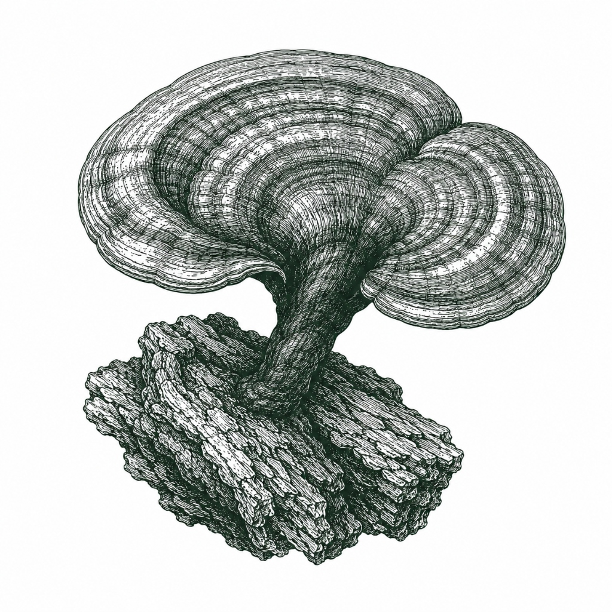

Regla Visual Absoluta: Cero fotografías comerciales. Toda representación biológica utiliza ilustraciones botánicas científicas (grabado / calcografía del siglo XIX con hachurado fino).
De cara al cliente, el dato se traduce con honestidad sensorial: el código de lote y parámetros de cámara viajan protegidos dentro del QR de trazabilidad.
Referencia: Expedición Botánica de Mutis (Cundinamarca) y Herbarios de Kew. El dibujo de línea pura sobre papel de lino perdura sin envejecer.